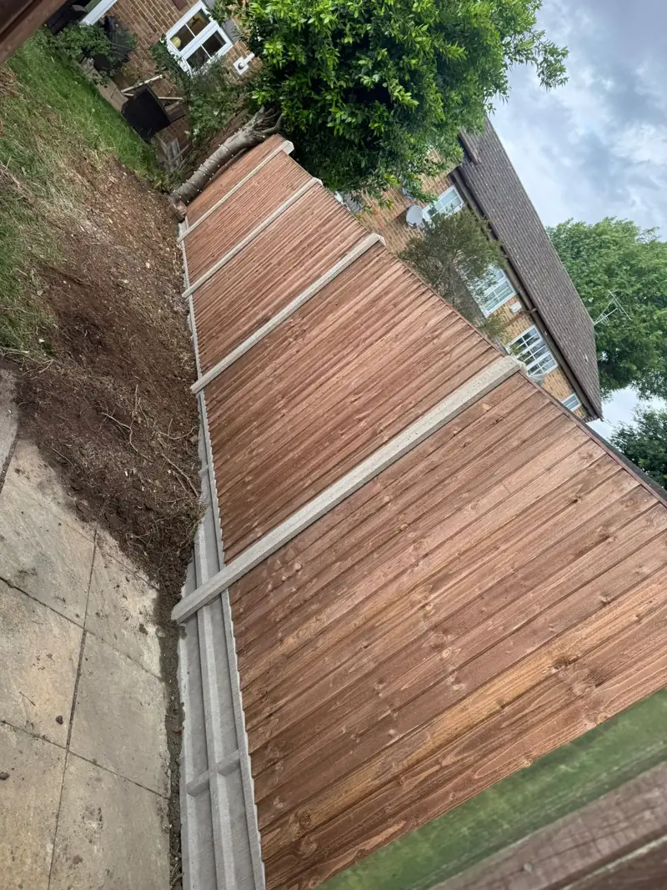
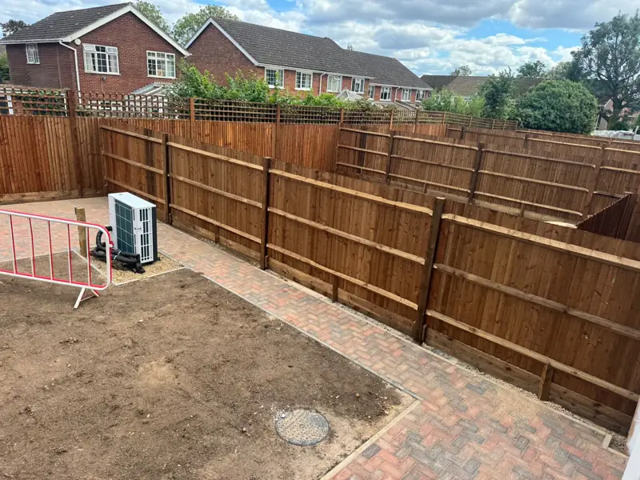
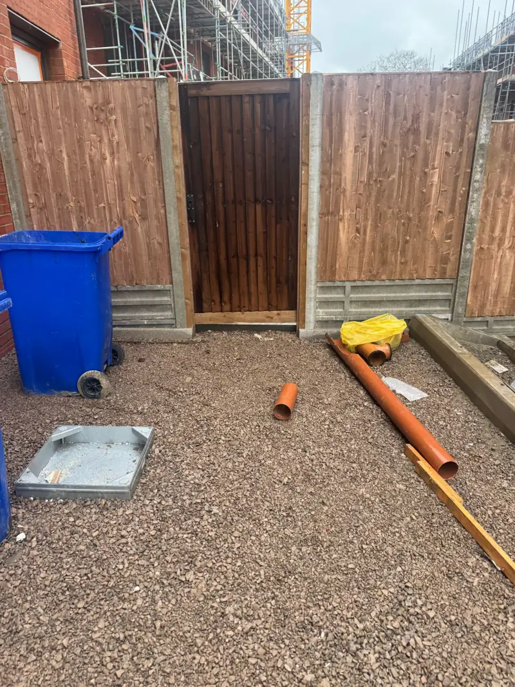
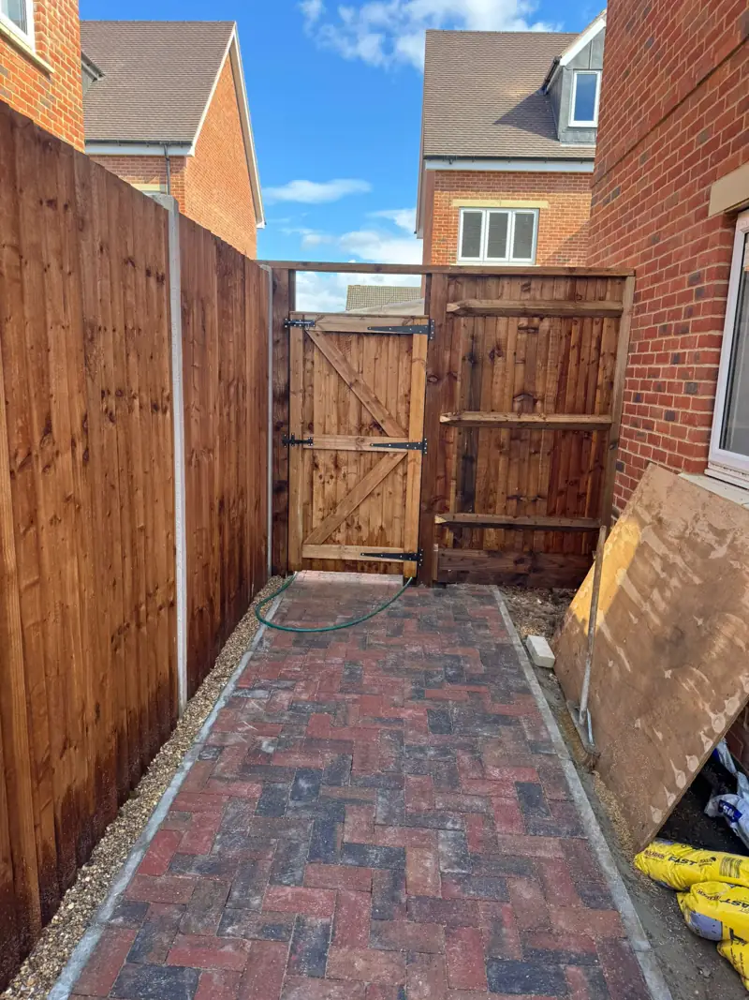
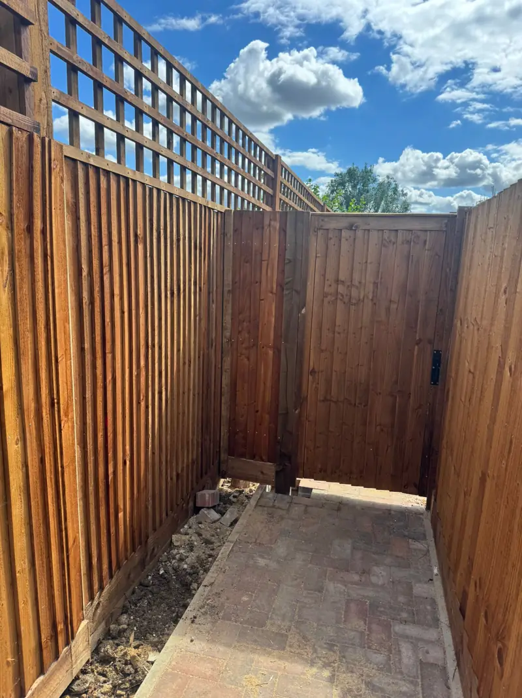
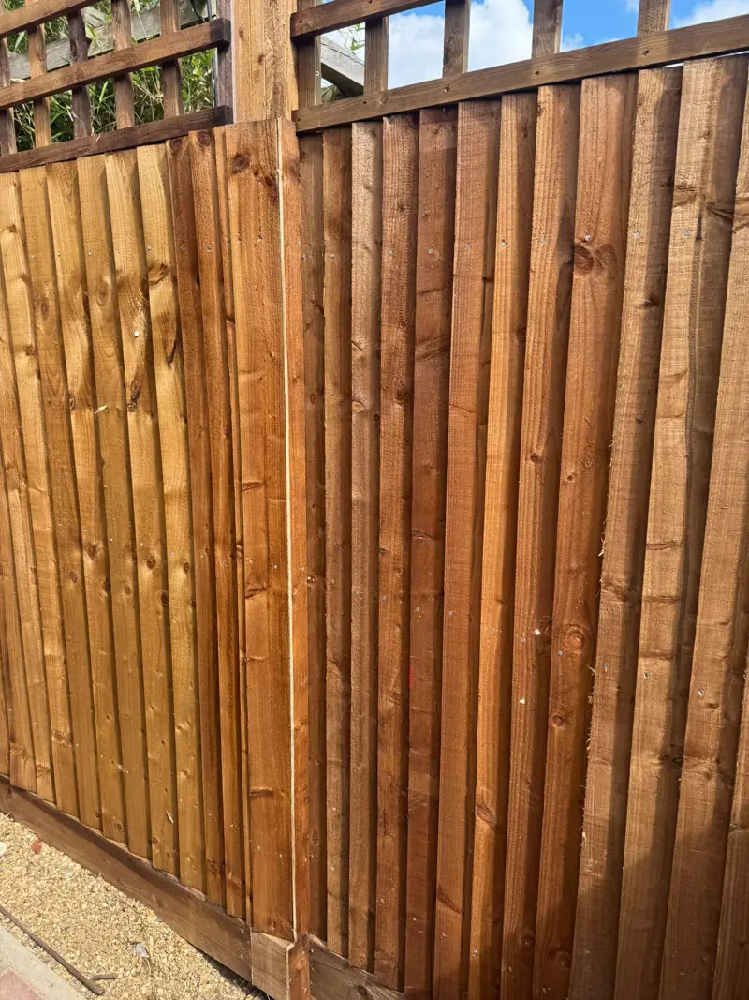
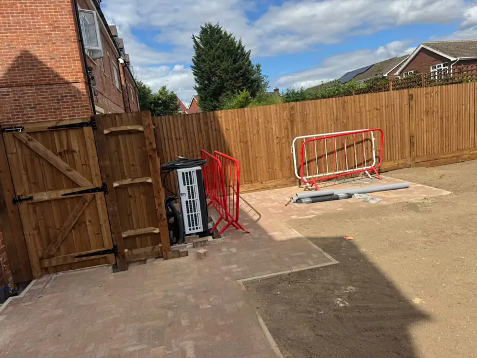
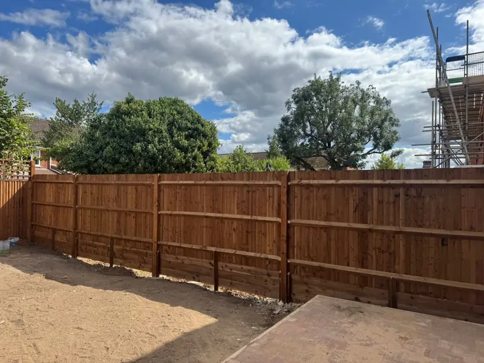

West London · Ruislip HA4
Recent work.
A look at recent fencing and outdoor works across West London.
Get my fixed price
Free survey · Same-day reply · No obligation
Recent work
Straight lines. Strong posts. Clean finish.
Recent fencing and gate jobs across West and North-West London. Straight lines, solid posts, tidy finish.










New on Google — judge us on the work, not the stars.
See recent jobs near you
Every job is photographed, priced in writing and backed by our 12-month workmanship guarantee. Ask us for photos of a recent job near you.
Like what you see?
Send your postcode and a rough length. We'll come back the same day with next steps and book your free survey.
Get my fixed priceOr call 07348 580359 · WhatsApp your photos